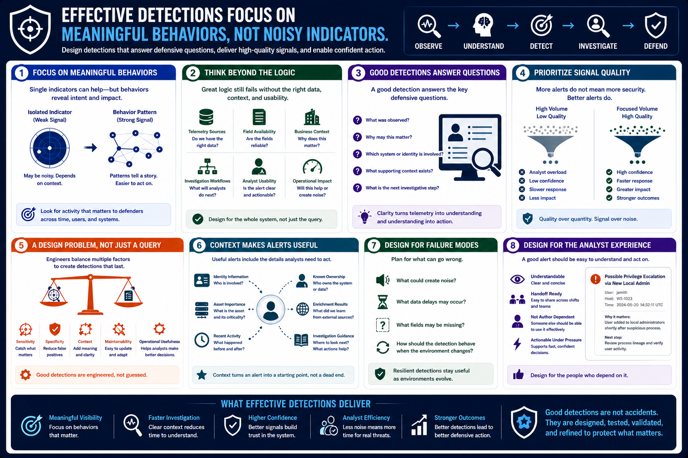

What Is Detection Engineering?
Building Effective Detections
Connecting to LMS... Progress: in progress
Version 1.0 | Date: 2026-06-16 | Educational overview of defensive detection engineering concepts.

Narration
Effective detections focus on meaningful behaviors rather than isolated indicators. A single indicator may be useful in the right context, but durable detections usually look for activity patterns that matter to defenders.
Detection engineers think carefully about telemetry sources, field availability, business context, investigation workflows, analyst usability, and operational impact. The best detection logic still fails if the data is unavailable or the alert is too vague to investigate.
Good detections answer a defensive question. They explain what was observed, why it may matter, which system or identity is involved, what supporting context exists, and what the next investigative step should be.
Signal quality matters more than alert volume. A detection program that produces thousands of low-confidence alerts can make the SOC slower and less confident. A smaller set of well-designed detections can create more value.
Building effective detections is therefore a design problem, not just a query-writing task. Engineers balance sensitivity, specificity, context, maintainability, and operational usefulness so defenders can make informed decisions.
Context is especially important. Useful alerts often include related identity information, asset importance, recent activity, known ownership, enrichment results, and links to investigation guidance or case workflows.
Effective detection design also considers failure modes. Engineers ask what could create noise, what data delays may occur, what fields may be missing, and how the detection should behave when the environment changes.
Before deployment, detection engineers should also think about the analyst experience. A good alert should be understandable under pressure, during handoffs, and by someone who did not write the detection.